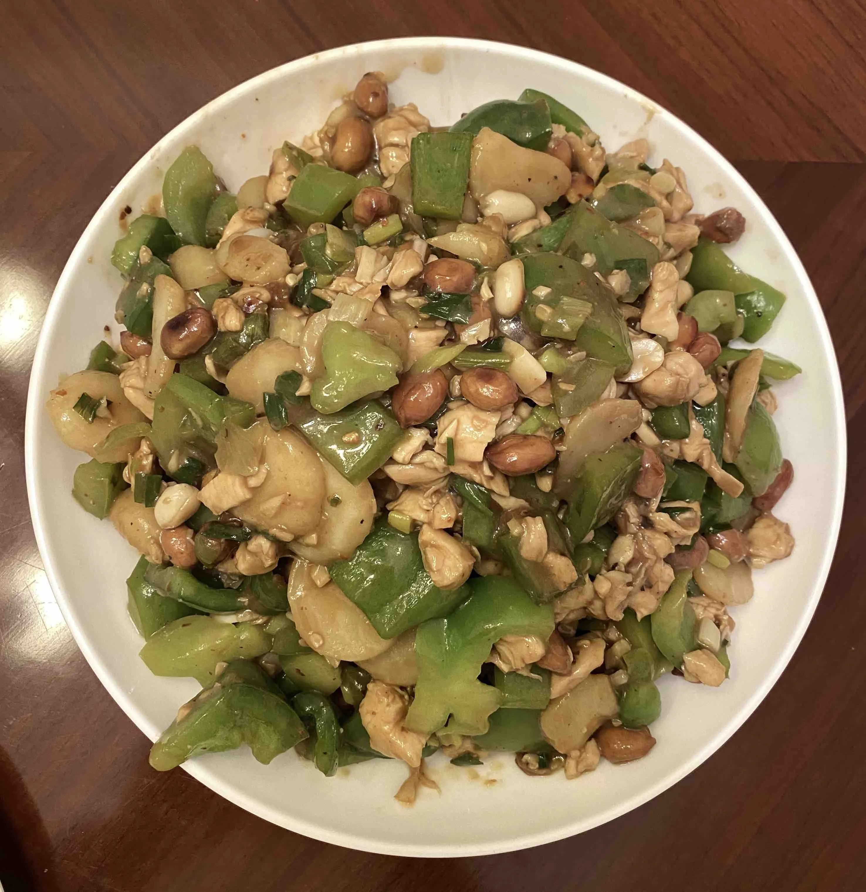
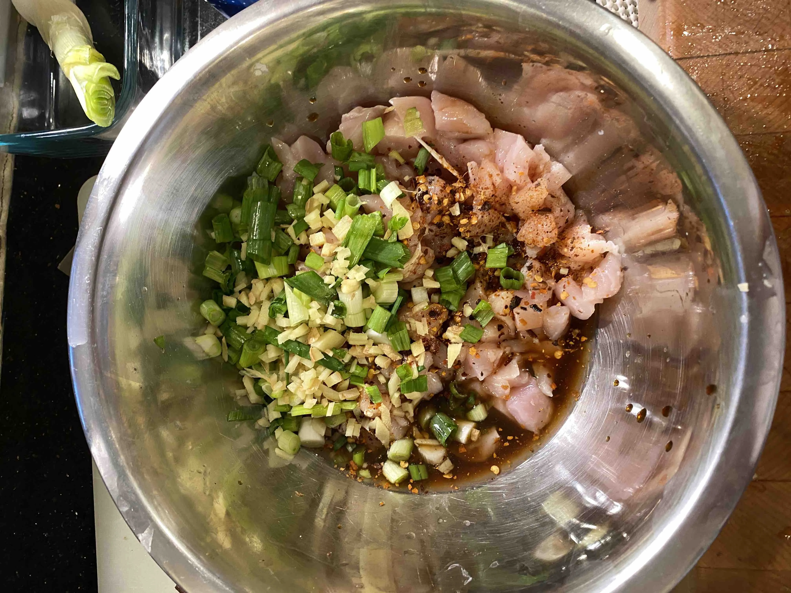
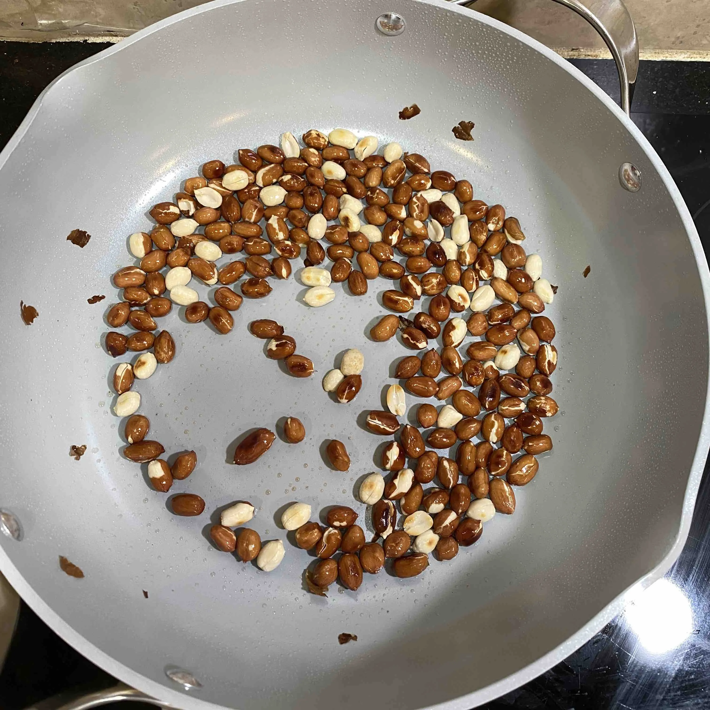

Kung Pao Chicken
A quick stir-fry built around browned peanuts, glossy sauce, and just-cooked chicken.

Ingredients
- 1 lb of chicken
- 3 green onions
- 1 teaspoon sugar
- 5 oz of raw, shelled peanuts with skin on
- 3 - 5 slices of ginger
- 5 cloves of garlic
- 2 - 3 green peppers
- Tapioca or starch powder
- Cooking wine
- Soy sauce
- Red chili flakes
Steps
-
Cut the chicken into cubes.
-
Dice the green onions, ginger, and garlic.
-
Cube the green peppers.
-
Prepare a 1:1 marinade of soy sauce and cooking wine with 1 teaspoon of sugar, roughly 1 cup total.
-
Marinate the chicken with all of the ginger and about half of the green onions in roughly 1/2 cup of the sauce.
-
Cook the peanuts in a bit of oil until brown with a little char on the skin, then remove them from the pan.
-
Coat the marinated chicken with starch powder.
-
Cook the chicken with a bit of oil and remove it as soon as it is done.
-
Cook the remaining green onions with the green peppers and garlic.
-
Add the chicken back briefly, then pour in about 1/2 cup of the soy sauce and cooking wine mixture and finish with salt and pepper.
Notes
Keep the sauce glossy rather than soupy. The chicken should stay tender and the peanuts should still taste toasty at the end.
Step Photos

